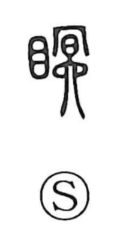

眠

Kun: nemuru, nemui | On: min
sleep ・ to sleep ・ sleepy ・ slumber ・ to die
Explanation
A phono-semantic character formed with the eye component and the phonetic element min (民). In archaic understanding, 民 depicted a person whose pupil had been pierced, signifying loss of sight. That image of unseeing eyes naturally evoked the state of sleep, so the character came to mean to sleep—extending at times to the euphemistic sense of to die—and by extension sleepy. The Shuowen treated 瞑 (mei) as the proper form, but in later usage 瞑 came to express senses like dark or to be blinded/dizzy, while 眠 kept the meanings related to sleep.